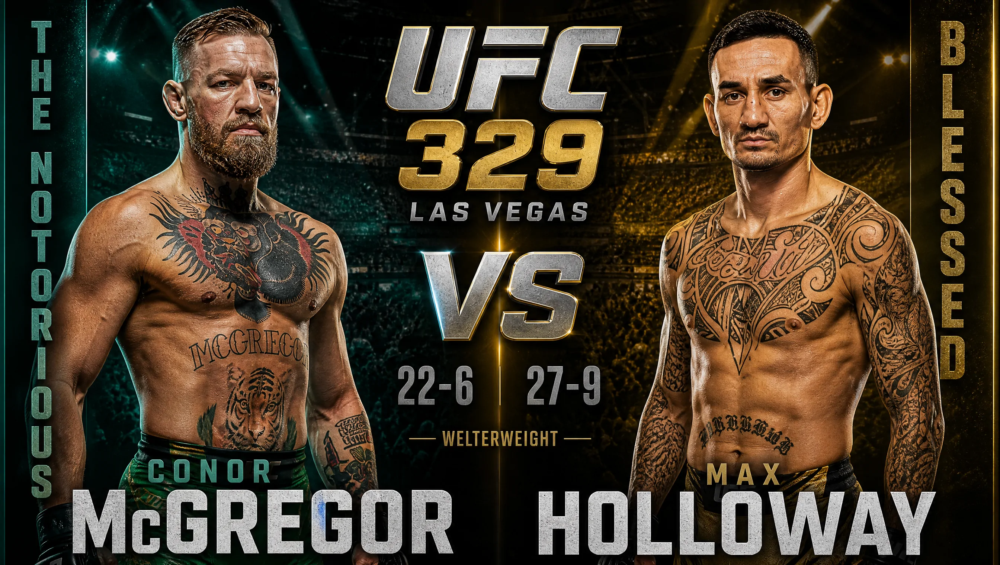
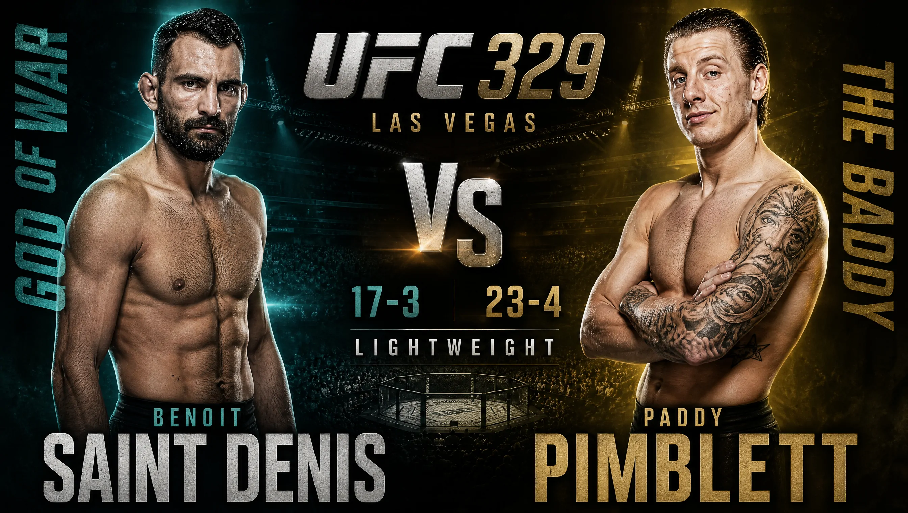
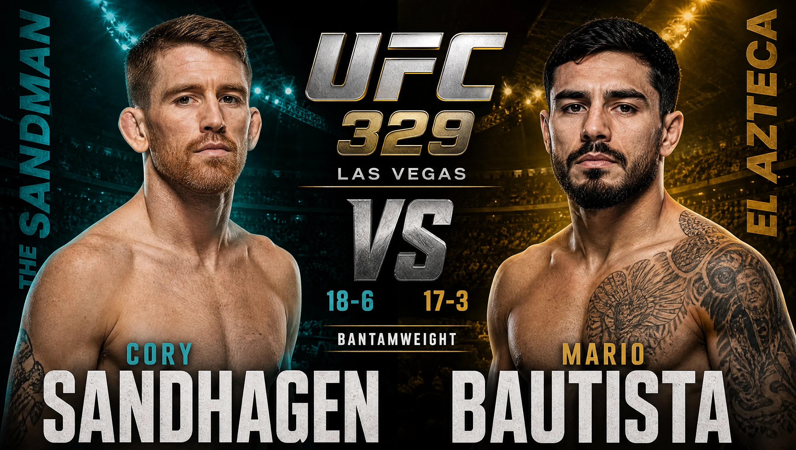
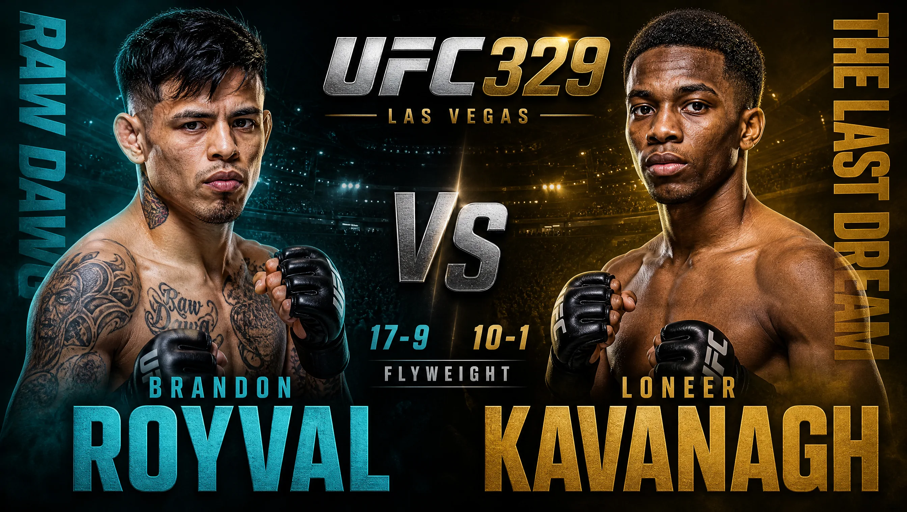
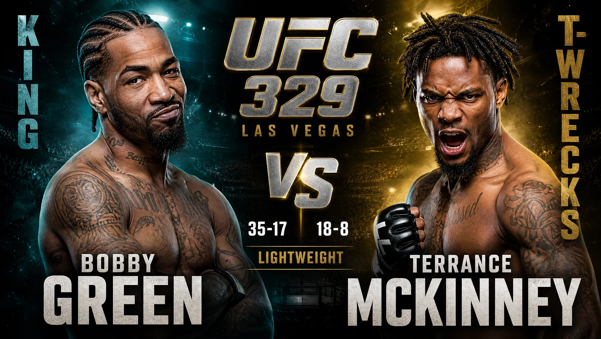
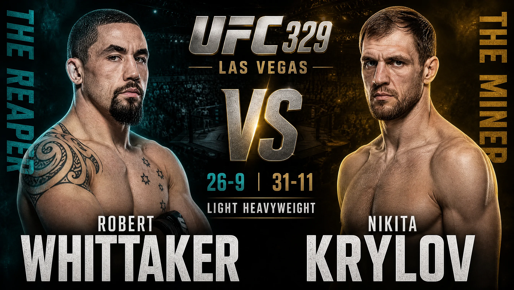
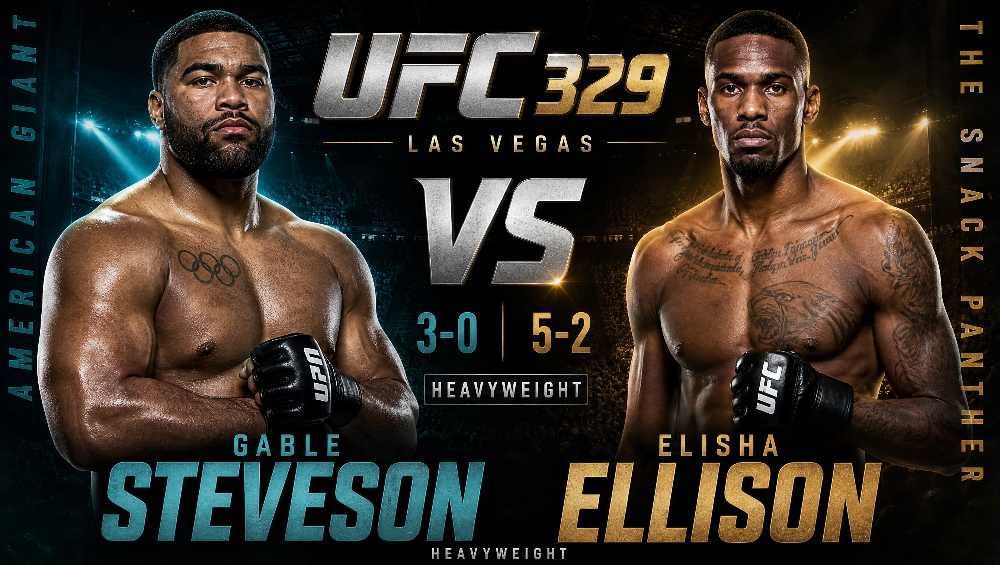

Bei UFC 329 am 11. Juli 2026 in Las Vegas kehrt Conor McGregor nach fast fünf Jahren zurück und trifft auf Max Holloway – ein Weltergewichts-Rückkampf ohne Titel und die Neuauflage ihres Duells von 2013, das McGregor damals nach Punkten gewann. In Deutschland läuft alles bei DAZN (im Abo, kein Pay-per-View). Die Main Card startet gegen 03:00 Uhr MESZ in der Nacht auf Sonntag, der Hauptkampf wird ab etwa 05:00 Uhr erwartet. Kurios: Die Buchmacher sehen nicht den Rückkehrer vorn, sondern Holloway.
Es gibt Comebacks, und es gibt dieses eine. Am Samstag, den 11. Juli 2026, steht Conor McGregor zum ersten Mal seit fast fünf Jahren wieder im Oktagon. Sein letzter Kampf endete im Juli 2021 mit einem gebrochenen Bein, danach kamen Operationen, Reha und viele angekündigte Rückkehrtermine, die alle verstrichen. Jetzt ist es tatsächlich so weit, in der T-Mobile Arena in Las Vegas, mitten in der UFC International Fight Week. Der Gegner heißt Max Holloway – und das ist kein Zufall, sondern eine Geschichte, die 13 Jahre zurückreicht.
Wir sind keine Wettagentur und kein Promoter, sondern eine Trainingshalle in Freiburg: das ExitAsia Gym, seit 2006, über 1000 Aktive im Monat. So einen Abend sehen wir wie alles im Kampfsport: nüchtern, mit Respekt vor dem Handwerk und mit dem Blick darauf, was Technik am Ende wirklich entscheidet. Hier bekommst du die komplette Kampfkarte, Fight für Fight, dazu die genaue Startzeit in deutscher Zeit und die Übertragung. Alle Einschätzungen sind Stand 9. Juli 2026 und keine Wettempfehlung.
Warum dieser Abend so besonders ist
Drei Dinge machen diesen Abend bei UFC 329 besonders, und keins davon hat mit einem Gürtel zu tun.
Erstens die Rückkehr. McGregor war fünf Jahre weg. Kein Kampf, keine Runde, nur Schlagzeilen. Mit 37 Jahren, drei Tage vor seinem 38. Geburtstag, in eine der härtesten Ligen der Welt zurückzukommen, ist für sich genommen schon eine Geschichte. Ob nach so einer Pause und einer schweren Beinverletzung noch das alte Timing da ist, weiß niemand, auch er selbst nicht.
Zweitens die Vorgeschichte. McGregor und Holloway kennen sich aus dem Käfig. 2013, beide noch fast unbekannt, gewann McGregor nach Punkten – und das mit einem gerissenen Kreuzband, das ihn danach fast ein Jahr außer Gefecht setzte. Dreizehn Jahre später ist Holloway kein Neuling mehr, sondern einer der besten Federgewichtler der jüngeren UFC-Geschichte.
Drittens die Rollenverteilung. Das ist der Punkt, der Fans überrascht. Nicht der zurückgekehrte Superstar ist der Favorit, sondern Holloway. Die Buchmacher trauen dem aktiveren, jüngeren Dauerläufer mehr zu als dem Rückkehrer, der fünf Jahre nicht gekämpft hat. Genau diese Spannung – Name gegen Form – zieht sich durch den ganzen Abend.
Wer kämpft im Hauptkampf von UFC 329? McGregor gegen Holloway
Ein Weltergewichts-Kampf (bis 77 kg) ohne Titel, angesetzt über fünf Runden als Hauptkampf. Hier prallt der explosive Einzelschlag auf das Dauerfeuer. McGregor sucht den einen Moment, Holloway die hundert kleinen. Und über allem schwebt die Frage: Wie viel ist nach fünf Jahren Pause noch da?
Conor McGregor (22–6) ist der Grund, warum die halbe Welt zuschaut. Der Ire war Champion in zwei Gewichtsklassen, ist ein Linksausleger mit blitzschneller, präziser Führhand und einer der berühmtesten linken Geraden des Sports. Sein Kapital war immer die kalte Präzision im ersten Austausch. Die offenen Fragen sind ebenso klar: Wie hält das reparierte Bein? Wie ist die Kondition nach fünf Jahren ohne Kampf? Und wie reagiert ein 37-Jähriger, wenn ein Kampf in die späten Runden geht, wo er früher schon Probleme mit dem Tank hatte?
Max Holloway (27–9) bringt genau das mit, was McGregor fehlen könnte: Aktivität. Der Hawaiianer ist ein Volumen-Schläger, der Gegner mit einem endlosen Strom aus Schlägen, Tritten, Knien und Ellbogen zermürbt, dazu ausgestattet mit einem der besten Kinne der Liga. Er war Federgewichts-Champion und hielt zwischenzeitlich den symbolischen „BMF“-Gürtel. Für diesen Kampf steigt er allerdings gleich mehrere Klassen hoch ins Weltergewicht, und das ist sein größtes Fragezeichen: Wie viel von seinem Tempo bleibt gegen einen von Natur aus größeren Mann?
Ehrlich zur Formkurve: Holloway kommt nicht makellos in den Kampf. Ende 2024 verlor er einen Titelkampf im Federgewicht durch den ersten K.o. seiner Karriere gegen Ilia Topuria, 2025 schlug er den zurückgetretenen Dustin Poirier, und Anfang 2026 gab er den BMF-Gürtel nach Punkten an Charles Oliveira ab. McGregor wiederum hat seit dem Beinbruch keinen einzigen Wettkampf bestritten. Zwei Männer also, die beide etwas zu beweisen haben.
Schlüssel zum Sieg
McGregor gewinnt, wenn …
- er früh seine präzise linke Hand landet und den Kampf in den ersten ein, zwei Runden beendet, bevor Kondition und Ringrost zum Thema werden,
- er Holloway zu einem Schlagabtausch auf Distanz zwingt, in dem der einzelne harte Treffer mehr zählt als das Volumen,
- sein Timing nach der langen Pause sofort wieder da ist – sein wahrscheinlichster Weg ist ein schnelles Finish.
Holloway gewinnt, wenn …
- er von der ersten Sekunde an das Tempo hochhält und McGregor mit schierem Schlagvolumen unter Dauerstress setzt,
- er den Kampf in die Runden 3 bis 5 zieht, wo fünf Jahre Pause und das Alter zu McGregors Nachteil ins Gewicht fallen,
- sein Kinn und seine Kondition den Gewichtsnachteil auffangen und er McGregor auslaugt.
Co-Main: Saint Denis gegen Pimblett
Wenn du einen Kampf rein nach Action aussuchst, ist es oft dieser: Benoît „God of War“ Saint Denis gegen Paddy „The Baddy“ Pimblett, zwei Leichtgewichte aus den Top 10, die beide Richtung Titel schielen. Nach einem gescheiterten Titelanlauf des einen und einer Siegesserie des anderen geht es hier darum, wer als Nächster hinter Champion Justin Gaethje in der Reihe steht.

Benoît Saint Denis (17–3) ist der wohl gefährlichste Aufsteiger der Division. Der Franzose, früher Soldat einer Spezialeinheit und Judo-Schwarzgurt, ist ein reiner Finisher: Alle 17 seiner Siege endeten vorzeitig. Er drückt von oben, sucht Aufgabegriffe und hat echte K.o.-Power. Zuletzt stoppte er Dan Hooker und knockte Beneil Dariush in nur 16 Sekunden aus.
Paddy Pimblett (23–4) ist der große Name mit der lauten Bühne, aber auch ein ernstzunehmender Allrounder mit starkem Bodenspiel und einem robusten Kinn. Anfang 2026 verlor er einen umkämpften Fünfrunder um den Interimstitel gegen Justin Gaethje und damit seine lange UFC-Siegesserie. Für ihn ist das die Chance, sofort zurückzuschlagen. Die Buchmacher sehen Saint Denis leicht vorn.
Schlüssel zum Sieg
Saint Denis gewinnt, wenn …
- er früh sein Tempo und seinen Finish-Instinkt durchsetzt, bevor Pimbletts Grappling greift,
- er über Clinch und Bodenkontrolle seine Aufgabegriffe und Schlagserien anbringt,
- er den Kampf schnell und körperlich macht, wo seine Explosivität zählt.
Pimblett gewinnt, wenn …
- er den frühen Ansturm übersteht und den Kampf in tiefes Wasser zieht,
- er seine Fünfrunden-Erfahrung aus dem Gaethje-Kampf und sein Bodenspiel ausspielt,
- er selbst eine Aufgabe-Chance findet oder den Kampf über die Distanz kontrolliert.
Wie sieht die komplette Kampfkarte von UFC 329 aus?
Hauptkampf und Co-Main hast du oben schon ausführlich. Hier sind die restlichen drei Kämpfe der Main Card, jeweils mit Kurzeinordnung, Schlüssel und unserer Tendenz. Auch hier gilt: alle Quoten Stand 9. Juli 2026.

Ein Rückkampf sieben Jahre nach dem ersten Duell, das Sandhagen 2019 per Armhebel gegen einen kurzfristig eingesprungenen Bautista gewann. Seitdem ist Bautista ein anderer: neun Siege aus zehn Kämpfen, ein druckvoller Grappler mit starkem Cardio und Vorliebe für den Rücken-Würger. Sandhagen dagegen ist einer der besten reinen Striker der Klasse, mit langer Reichweite und kreativen Kicks, und kommt von einem verpassten Titelanlauf gegen Merab Dvalishvili. Es ist ein klassisches Duell Distanz-Striking gegen Pressure-Grappling.

Erfahrung gegen Aufsteiger im Fliegengewicht. Royval, langjähriger Top-4-Mann und ehemaliger Titelherausforderer, ist ein unermüdlicher Volumen-Schläger mit granitenem Kinn, steckt aber in einer Niederlagenserie und kämpft um seinen Platz im Ranking. Kavanagh ist der heißeste Prospect der Klasse: Der Engländer, Kickbox-Schwarzgurt mit langer Reichweite, kommt von einem starken Punktsieg über den früheren Champion Brandon Moreno. Ein Sieg würde ihn endgültig in die Titelnähe schieben.

Der Kampf, der die Main Card eröffnet, ist ein Aufeinandertreffen der Gegensätze. Der 39-jährige Green ist ein cooler Konterkämpfer mit über 50 Profikämpfen und aktuell auf einer Dreier-Siegesserie. McKinney ist der explosive Finisher mit einem UFC-Rekord von 13 Finishes in Folge und einem berüchtigten Blitzstart. Sein Fragezeichen: das Cardio nach der ersten Runde. Die Wettmärkte erwarten eine frühe Entscheidung.
Zwei Prelims, die du nicht verpassen solltest
Auch im Vorprogramm stehen zwei Namen, die aufhorchen lassen. In Deutschland zeigt DAZN diese Kämpfe mit, du musst also nicht erst zur Main Card einschalten.

Robert Whittaker, ehemaliger Mittelgewichts-Champion, wagt hier zum ersten Mal den Schritt hoch ins Halbschwergewicht. Nach zwei Niederlagen und einem zuletzt brutalen Gewichtmachen soll sich die neue Klasse „viel natürlicher“ anfühlen. Sein Gegner Nikita Krylov ist ein abgezockter Veteran mit finish-lastiger Bilanz, der genau testen wird, wie gut Whittakers scharfes Boxen bei 205 Pfund funktioniert. Die Quoten sind hier ungewöhnlich uneinig.

Das mit Abstand einseitigste Duell des Abends, zumindest auf dem Papier. Gable Steveson ist Ringer-Olympiasieger von Tokio 2020 und zweifacher NCAA-Champion, in seiner jungen MMA-Karriere 3–0, alle drei Siege durch Finish in Runde 1. Für sein UFC-Debüt führen ihn einige Buchmacher als so klaren Favoriten, dass die Quote als eine der extremsten der UFC-Geschichte gehandelt wird. Ellison ist der krasse Außenseiter, dessen einzige Chance ein früher, sauberer Treffer ist.
Alle Kämpfe und unsere Tendenz auf einen Blick
Hier die Übersicht. „Konfidenz hoch“ heißt: Stil und Quote zeigen klar in eine Richtung. „Mittel“ heißt: Wir haben eine Tendenz, aber der Kampf kann kippen. „Offen“ heißt: echtes Pick'em, wir legen uns bewusst nicht fest.
| Kampf | Gewichtsklasse | Wir denken | Konfidenz |
|---|---|---|---|
| McGregor vs. Holloway (Main) | Weltergewicht | Max Holloway | mittel |
| Saint Denis vs. Pimblett (Co-Main) | Leichtgewicht | Benoît Saint Denis | mittel |
| Sandhagen vs. Bautista | Bantamgewicht | Cory Sandhagen | mittel |
| Royval vs. Kavanagh | Fliegengewicht | Lone'er Kavanagh | mittel |
| Green vs. McKinney | Leichtgewicht | offen | offen |
| Whittaker vs. Krylov (Prelim) | Halbschwergewicht | offen | offen |
| Steveson vs. Ellison (Prelim) | Schwergewicht | Gable Steveson | hoch |
Zur Einordnung: Das sind unsere begründeten Einschätzungen auf Basis von Stilfragen und Quoten (Stand 9. Juli 2026), keine Wettempfehlung. Quoten können sich bis zum Event ändern, und gerade in einem Comeback-Kampf entscheidet manchmal ein einziger Treffer.
Wann startet UFC 329 in Deutschland? Uhrzeit in deutscher Zeit (MESZ)
Wann kämpft McGregor also genau? Der Kampfabend läuft am Samstagabend in Las Vegas, was in Deutschland tief in die Nacht auf Sonntag reicht. Las Vegas liegt im Juli neun Stunden hinter uns. Konkret heißt das: Wer den Hauptkampf live sehen will, stellt sich am besten den Wecker – oder macht die Nacht durch.
Startzeiten & Übertragung im Überblick
Wo kann ich UFC 329 sehen? Übertragung in Deutschland, Österreich & der Schweiz
Im deutschsprachigen Raum läuft UFC 329 exklusiv bei DAZN, online im Stream über App oder Website. Anders als früher bei großen UFC-Events fällt kein separates Pay-per-View an: Das Event steckt im DAZN-Abo. DAZN zeigt die komplette Karte inklusive der Prelims, mit deutschem Kommentar und der Option, auf den US-Originalton umzuschalten. Wer die Nacht nicht durchmachen will, findet Re-Live und Highlights ab Sonntagvormittag in der DAZN-Mediathek.
Ein Hinweis am Rande: In den USA ist die UFC 2026 auf das Streaming-Modell von Paramount+ umgestiegen. Für dich in Deutschland, Österreich und der Schweiz ändert das nichts – hier bleibt DAZN die Adresse. Die DAZN-Preise haben sich 2026 allerdings verschoben, prüf den aktuellen Tarif also am besten direkt in der App (in der Schweiz in CHF).
Der Hey Coach Take
Aus 20 Jahren in der Halle nehmen wir bei diesem Kampf vor allem eine Frage mit: Was schlägt am Ende durch, ein großer Name oder saubere Aktivität? Für uns im Training ist die Antwort meistens dieselbe. Der eine spektakuläre Treffer ist selten, das konstante, saubere Arbeiten über die Runden fast immer entscheidend. Genau das erlebst du bei McGregor gegen Holloway in Reinform: Präzision und Erinnerung an alte Klasse auf der einen Seite, Tempo und Wiederholung auf der anderen. Wer wissen will, warum wir Anfängern ständig Kondition und Wiederholung statt Lucky Punch predigen, bekommt an diesem Abend das perfekte Anschauungsmaterial.
Was das für dich als Kampfsportler bedeutet
Auf der Karte steht kein Kämpfer aus Deutschland, Österreich oder der Schweiz. Europäisch wird es trotzdem, mit dem Franzosen Saint Denis, dem Engländer Pimblett und dem in der Ukraine geborenen Krylov. Einen Lokalhelden zum Mitfiebern gibt es also nicht – der Mehrwert für dich liegt in den Prinzipien, nicht in einem Namen.
Drei davon kannst du als Einsteiger sauber lernen, ganz ohne dass dir jemand verspricht, du wärst nach einem Kurs auf UFC-Niveau:
- Kondition schlägt Spektakel. McGregors größtes Fragezeichen ist nach fünf Jahren nicht die Technik, sondern der Tank. Für dich heißt das: Ausdauer ist keine Nebensache, sondern die Basis, auf der Technik erst funktioniert. Trainierbar über Pratzenrunden mit Tempo und saubere Atemarbeit.
- Volumen statt Lucky Punch. Holloway gewinnt über hundert saubere Schläge statt über den einen Wunderschlag. Übersetzt aufs Training: lieber saubere Kombinationen wiederholen als den einen K.o. jagen. Das ist die geduldige, unspektakuläre Arbeit, die am Ende trägt.
- Timing kommt vor Kraft. Der gefährlichste Schlag ist der, den der Gegner nicht kommen sieht. Distanzgefühl und Timing lernst du von Anfang an, lange bevor es um maximale Härte geht.
Klar gesagt: Das sind Profis auf einer der größten Bühnen des Sports. Die Prinzipien dahinter – Kondition, Volumen, Timing – lernst du als Anfänger in Freiburg trotzdem von Grund auf.
Du willst diese Grundlagen selbst auf die Pratze bringen statt nur zuzuschauen? Dann fang sauber an: Im Kickboxen-Komplettkurs baust du Schlagdistanz, Timing und Kondition von Null auf – und wenn dich das Knie- und Clinch-Spiel reizt, ist der Muay-Thai-Komplettkurs der nächste Schritt.